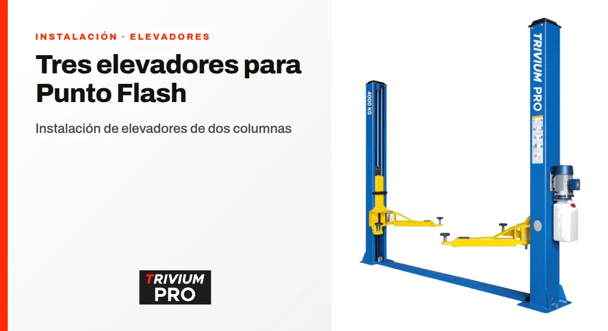

En Trivium Center, seguimos apostando por la innovación y la excelencia técnica en cada proyecto.
Recientemente, completamos la instalación de tres elevadores de dos columnas en las instalaciones de Punto Flash, una empresa que está revolucionando la compra y venta de autos usados en Argentina.

Punto Flash nació como parte del ecosistema de Mercado Libre, y combina tecnología de punta con experiencia en el mercado automotriz para ofrecer una experiencia ágil, segura y transparente a sus clientes.
Los elevadores instalados por Trivium Center fueron seleccionados por su rendimiento, confiabilidad y bajo mantenimiento, ideales para las operaciones intensivas de inspección y preparación de vehículos que realiza Punto Flash a diario.
Con este nuevo proyecto, reafirmamos nuestro compromiso de proveer soluciones técnicas que impulsen el crecimiento y la eficiencia del sector automotriz argentino.
💪 Gracias a Punto Flash por confiar en Trivium Center como aliado técnico.